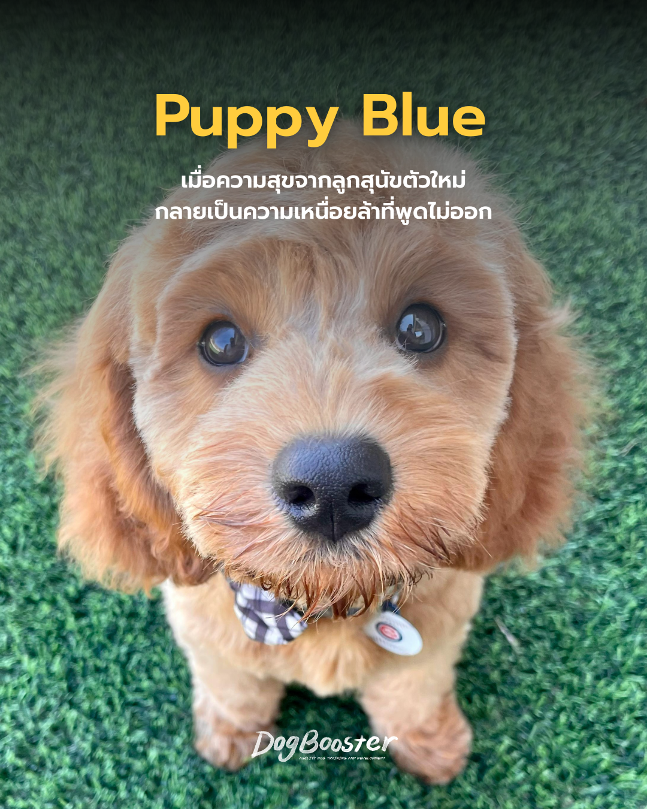

ลองนึกภาพเจ้าของคนหนึ่ง — สมมติชื่อ “พลอย” — ที่วางแผนรับลูกสุนัขมาเลี้ยงมาเป็นเดือน อ่านบทความ ดูคลิป เตรียมของเตรียมใจมาอย่างดี แต่พอลูกสุนัขตัวจริงมาถึงบ้านในคืนแรก มันร้องไห้ทั้งคืน กัดทุกอย่างที่ขวางหน้า ฉี่เรี่ยราดทั่วบ้าน และพลอยเองก็นอนไม่หลับติดต่อกันหลายวัน
สิ่งที่พลอยรู้สึกไม่ใช่ความสุข แต่เป็นความเหนื่อยล้า ความเครียด และแอบมีความคิดผุดขึ้นมาว่า “เรารับมันมาผิดหรือเปล่า” — พร้อมความรู้สึกผิดที่คิดแบบนั้น
ถ้าคุณเคยรู้สึกแบบนี้ คุณไม่ได้แปลก และคุณไม่ได้อยู่คนเดียว สิ่งที่เกิดขึ้นมีชื่อเรียกว่า “Puppy Blue”
Puppy Blue ไม่ใช่คำวินิจฉัยทางการแพทย์อย่างเป็นทางการ แต่เป็นคำที่ใช้อธิบายภาวะความเครียด ความวิตกกังวล หรือความรู้สึกหดหู่ที่เกิดขึ้นในช่วงสัปดาห์แรก ๆ หลังรับลูกสุนัขมาเลี้ยง คล้ายกับภาวะ “Baby Blues” ที่เกิดกับพ่อแม่มือใหม่หลังคลอดลูก
ในทางระบบประสาท ร่างกายของเจ้าของใหม่ต้องเผชิญกับการเปลี่ยนแปลงพร้อมกันหลายอย่าง:
สิ่งสำคัญที่สุดที่อยากให้เจ้าของทุกคนเข้าใจ คือ การรู้สึกเหนื่อยล้าหรือสงสัยในตัวเองช่วงแรก ไม่ได้แปลว่าคุณเป็นเจ้าของที่ไม่ดี ความรู้สึกนี้เป็นปฏิกิริยาทางสรีรวิทยาที่เกิดขึ้นได้กับทุกคน ที่ต้องปรับตัวรับผิดชอบชีวิตใหม่แบบกะทันหัน ไม่ต่างจากพ่อแม่มือใหม่ที่ต้องปรับตัวรับลูกคนแรก
การตีตราตัวเองว่า “ใจร้าย” หรือ “ไม่มีความอดทน” มีแต่จะเพิ่มความเครียดให้ตัวเองมากขึ้น และในบางกรณีอาจไปกระทบความสัมพันธ์ระหว่างคุณกับลูกสุนัขในระยะยาวโดยไม่รู้ตัว
แนวทางที่ได้ผลไม่ใช่การ “ฝืนอดทน” ให้มากขึ้น แต่คือการ ลดภาระทางระบบประสาททั้งของคุณและลูกสุนัขไปพร้อมกัน แนวคิดแบบ Games-Based Training ที่ผู้เชี่ยวชาญด้านการฝึกสุนัขอย่าง Susan Garrett สนับสนุนมาตลอด ให้หลักการที่นำมาปรับใช้ได้ดีในช่วงนี้:
โดยทั่วไป Puppy Blue มักจะค่อย ๆ ดีขึ้นภายใน 2–4 สัปดาห์ เมื่อทั้งคุณและลูกสุนัขเริ่มปรับตารางชีวิตเข้าหากันได้ อย่างไรก็ตาม หากความรู้สึกหดหู่หรือวิตกกังวลยังคงอยู่นานกว่านั้น หรือรุนแรงจนกระทบการใช้ชีวิตประจำวัน การพูดคุยกับผู้เชี่ยวชาญด้านพฤติกรรมสุนัข หรือปรึกษาผู้เชี่ยวชาญด้านสุขภาพจิต ก็เป็นทางเลือกที่ควรพิจารณาอย่างจริงจัง ไม่ใช่เรื่องน่าอาย
Puppy Blue คือปฏิกิริยาปกติที่เกิดจากความเปลี่ยนแปลงของร่างกายและวิถีชีวิตอย่างกะทันหัน ไม่ใช่สัญญาณว่าคุณไม่เหมาะจะเลี้ยงสุนัข การให้เวลาตัวเอง ลดความคาดหวัง และใช้แนวทางฝึกแบบเกมที่อ่อนโยน จะช่วยให้ทั้งคุณและลูกสุนัขผ่านช่วงเวลานี้ไปด้วยกันได้อย่างมั่นคงขึ้น
💬 เคยผ่านช่วง Puppy Blue มาไหม? เล่าประสบการณ์ของคุณ หรือ 📌 บันทึกบทความนี้ไว้เผื่อวันที่ต้องการกำลังใจ และแชร์ให้เพื่อนที่กำลังจะรับลูกสุนัขตัวใหม่มาเลี้ยงได้เลยนะคะ 🐾
สมัครเรียนทันที ปรึกษาการเลี้ยงลูกสุนัขกับ DogBooster